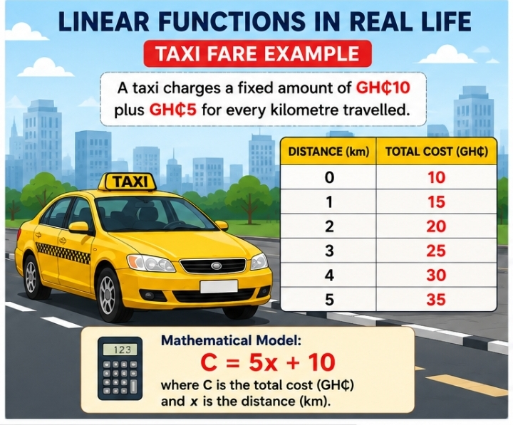
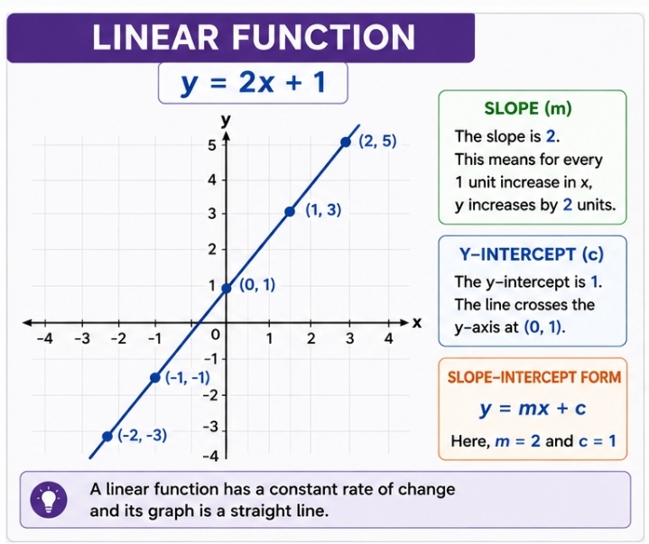
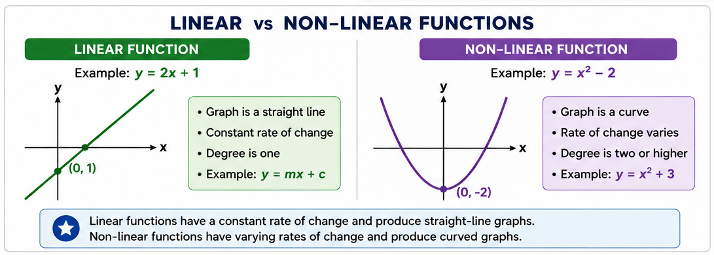
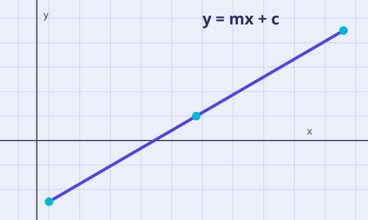
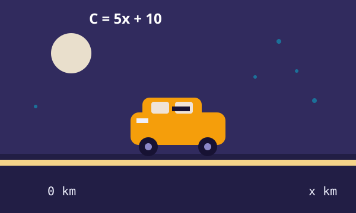

Linear and Non-Linear Functions
Recognise and use appropriate algebraic notation and properties of linear and non-linear functions and solve them simultaneously.
Ghana SHS curriculum alignment
- Subject: Mathematics
- Level: Senior High School
- Topic: Linear & Non-Linear Functions
- Curriculum Reference: I.1.2.II.8
- Learning Area: Algebra / Functions
- Learning Mode: Learner-Centred
Learning Indicator: Recognise and use appropriate algebraic notation and properties of linear and non-linear functions and solve them simultaneously.
- Investigate situations leading to linear and non-linear equations.
- Represent equations algebraically and graphically.
- Classify equations.
- Justify classifications.
- Solve linear and non-linear equations.
- Solve simultaneous equations.
- Collaborative Learning
- Experiential Learning
- Whole-Class Discussion
- Problem-Based Learning
Learning indicators
By the end of this lesson, learners should be able to:
- Recognise linear functions/equations.
- Recognise non-linear functions/equations.
- Use function notation.
- Explain differences between linear and non-linear functions.
- Construct tables of values.
- Interpret graphs.
- Classify equations and justify classifications.
- Solve linear equations.
- Solve simultaneous equations.
- Interpret graphical solutions.
- Apply functions to real-life situations.
- Communicate mathematical reasoning.
Success criteria
Tick each statement as you become confident with it. Your progress is saved on this device.
Teaching and learning resources
Digital
- MathVerse website
- Interactive Canvas graphs
- GeoGebra
- Desmos
- Instructional YouTube video
- Digital quiz
- Interactive activities
Mathematical
- Graph paper
- Tables of values
- Coordinate plane
- Mathematical examples
- Calculator where appropriate
Core competencies
Teaching philosophy
Mathematics should not be presented as a collection of rules to memorise. Learners should actively construct mathematical understanding through exploration, discussion, problem solving and application.
The teacher acts as a facilitator who designs meaningful experiences, asks guiding questions, and encourages full learner participation. Technology — graphs, sliders, and interactive checks — makes mathematics visible, manipulable and engaging, while the teacher continues to offer support tailored to each learner's needs.
Learning theory
Constructivist Learning Theory underpins this lesson. Learners build on prior knowledge of algebra through investigation and group discussion, using graphs and tables to discover patterns for themselves. The teacher guides this discovery with questions rather than direct answers, and the lesson closes with reflection so learners consolidate what they have found.
Lesson introduction — the taxi problem
A taxi charges a fixed amount of GH₵10 plus GH₵5 for every kilometre travelled.
- Can we create a mathematical rule?
- What happens when distance increases?
- What is the relationship between distance and cost?
This rule is linear — the cost increases at a constant rate of GH₵5 for every extra kilometre, so a graph of C against x is a straight line.

Function notation
In function notation, x is the input and f(x) is the output produced by applying the rule to that input.
Interactive example: Find f(4).
f(4) = 8 + 3
f(4) = 11
Linear functions
What is a linear function? A linear function is a rule that relates two variables so that every time the input increases by a fixed amount, the output changes by a fixed amount too. Because that change never speeds up or slows down, plotting the points always produces points lying on one perfectly straight line — which is exactly where the name "linear" comes from.
- m = gradient (rate of change)
- c = y-intercept
- x, y = variables
Two features always identify a linear function:
- Constant rate of change. The gradient m tells you exactly how much y changes for every 1 unit increase in x, and that amount never changes.
- Every variable has power 1. There is no x², no 1/x, no √x and no xy term — x and y are never multiplied by themselves or by each other.
Why the taxi rule is linear
Recall C = 5x + 10 from the introduction. Every extra kilometre adds exactly GH₵5, no more and no less — that constant GH₵5-per-kilometre rate is precisely the gradient m, so the fare grows in a straight line as distance grows.
Examples
Also linear, once rearranged
Each of these can be rearranged into the form y = mx + c without ever needing to square, root, or multiply a variable by another variable — that rearrangement test is a reliable way to check.

Linear function vs. linear equation
A linear function, written f(x) = mx + c, expresses one variable explicitly in terms of another. A linear equation such as 2x + 3y = 12 expresses a relationship between two variables without isolating one of them.
Both describe the same kind of straight-line relationship — the equation can always be rearranged into function form, connecting the algebraic and graphical representations.
Non-linear functions
What is a non-linear function? A non-linear function is any rule where the output does not change by a fixed amount for every fixed step in the input. Because the rate of change keeps changing, the plotted points bend away from a straight line — producing a curve instead.
You can usually spot a non-linear function algebraically because it contains at least one of the following:
- A variable raised to a power other than 1 — for example x² or x³.
- A variable under a root — for example √x.
- A variable in a denominator — for example 1/x.
- Two variables multiplied together — for example xy.
Why x² breaks the straight line
Compare two steps of f(x) = x²: from x = 1 to x = 2, f(x) jumps from 1 to 4 (a change of 3). From x = 2 to x = 3, f(x) jumps from 4 to 9 (a change of 5). The step size keeps growing, so the rate of change is not constant — that changing rate is exactly what curves the graph.
Linear vs. non-linear at a glance

| Feature | Linear | Non-Linear |
|---|---|---|
| Graph | Straight line | Generally curved / non-straight |
| Degree in polynomial examples | One | May be two or higher |
| Rate of change | Constant | May vary |
| Example | y = mx + c | y = x² |
Illustrations


Table of values
| x | −2 | −1 | 0 | 1 | 2 |
|---|---|---|---|---|---|
| y | −3 | −1 | 1 | 3 | 5 |
Every time x increases by 1, y increases by 2 — a constant rate of change (the differences row below never changes), which is why the graph is a straight line.
Interactive canvas graph
Drag the slider to change the gradient m in y = mx + 1 and watch the line redraw.
y = 1x + 1
Worked example — classify these
- y = 3x + 5 Linear — one term in x, constant rate of change.
- y = x² + 4 Non-linear — x is squared.
- 2x + 3y = 12 Linear — both variables have degree one.
- x² + y² = 9 Non-linear — describes a circle, not a straight line.
Curriculum activity 1 — classify each equation
Simultaneous equations
Curriculum examples
Example 1
Example 2
Graphical interpretation
The lines y = 2x + 1 and y = x + 4 are plotted together below. The point where they cross is the simultaneous solution.
The red point marks the intersection at (3, 7) — the coordinates that satisfy both equations at once.
Real-life applications
Taxi fares combine fixed and variable costs.
Functions model costs, sales and revenue.
Functions describe data, time and resource relationships.
Equations model measurements and quantities.
Curriculum activity 2
Problem A
Problem B
Problem C
Assessment for learning
- Teacher questioning
- Observation
- Group activities
- Immediate feedback
- Interactive questions
- Exit questions
Exit question
Assessment as learning
Revisit these statements at the end of the lesson to judge your own progress.
Digital citizenship
AI tools can support learning, but learners must verify answers and submit work that reflects their own understanding.
Learner reflection
Lesson summary
- Linear functions
- Non-linear functions
- Function notation
- Tables
- Graphs
- Simultaneous equations
- Real-life applications
- Collaboration
- Problem solving
- Digital citizenship